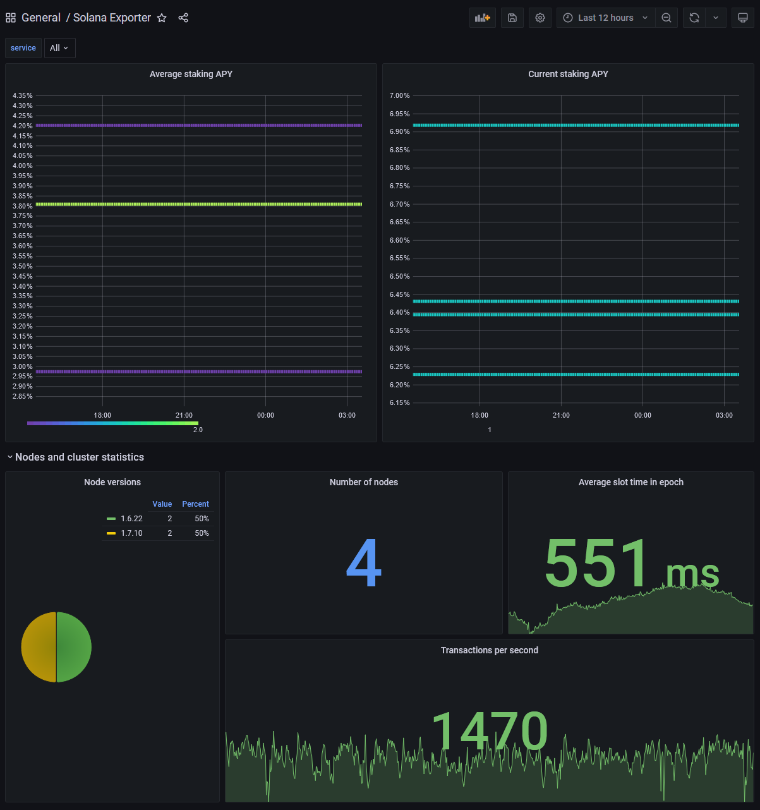

Monitoring a stakepool
Although solana-exporter can export statistics about an entire cluster, many of its gauges can be limited to a
particular subset of pubkeys. This can be useful for when the specified RPC node has rate-limits, and only a few pubkeys
need to be monitored.
Example config.toml
rpc = 'https://api.mainnet-beta.solana.com/'
target = '0.0.0.0:9179'
vote_account_whitelist = [
"5BAi9YGCipHq4ZcXuen5vagRQqRTVTRszXNqBZC6uBPZ",
"F5b1wSUtpaYDnpjLQonCZC7iyFvizLcNqTactZbwSEXK",
"8jxSHbS4qAnh5yueFp4D9ABXubKqMwXqF3HtdzQGuphp",
"irKsY8c3sQur1XaYuQ811hzsEQJ5Hq3Yu3AAoXYnp8W"
]
staking_account_whitelist = [
"Ckk4SDm6z7vucvN7cSXBi26sohtrWaQj3zxSEBtiQXgJ",
"ACNaRHi3t6h3bbS2x5qt1AVkMaCws8qSRRzoMdSF481X",
"H8CHD1cqybdYQyhvpdxBFLnX9tyUzhPaouVACxANCwNF",
"AfXa9ndMAHHQ6jHC2rQ79FLKwq8VDYAgRAPhjKN6grn3",
"HXK8UkRvjHYv1RVgJJnWtmB9AhSeYRgckpjLcaR7y1Yb",
"HJTyg3FpikHurh5Hi5fdBYCKd1YrVQe2BY3AQCMycUmX",
"ANyjwHQXR6oiuPQCTXkq7ENFT1q8aMVBrXcPKTYXXmb2",
"6BaRjonCB91dFfhNRT4C1EndNydJdEfxheYPtApKyY9y"
]
[maxmind]
username = 'username'
password = 'password'
This is a sample configuration file that instructs solana-exporter to only export statistics related to the specified
pubkeys, using a public RPC node. By not fetching information about all validators, it is possible to avoid slow scrape
times due to rate limiting.
Be sure to understand the behaviour of APY gauges when modifying pubkey_whitelist
.
Monitoring using Grafana
After solana-exporter has been appropriately configured, set up Prometheus and
Grafana with the sample dashboard supplied. You should see statistics on your stakepool.
 Stake pool APY metrics
 Stake pool decentralisation metrics
Stake pool decentralisation metrics
 Stake pool metrics
Stake pool metrics